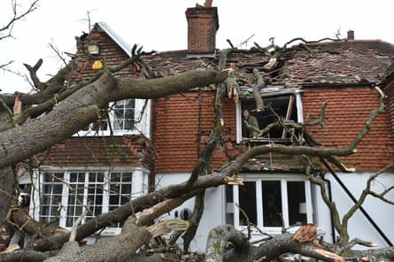

The Met Office should name storms after fossil fuel companies, campaigners have said, after the weather forecasting service opened a storm naming competition .
Climate campaigners have recommended the Met Office names its storms after various oil and gas corporations to remind the public of the link between burning fossil fuels and extreme weather.
They are hoping to spark a craze similar to “ Boaty McBoatface ”, when in 2016 the National Environment Research Council opened a competition to name a £200m polar research ship. Nationwide hilarity ensued when the public voted Boaty McBoatface as the top choice for the ship’s name. However, the name was not chosen by the government, who opted to name it the Sir David Attenborough instead.
Hundreds of people have submitted ideas to the Met Office. While some have named specific oil and gas companies, others have suggested names such as “bigoil” and “fossily mcfuelface”.
Alexis Eyre, who works in sustainable marketing, has been drumming up support for the campaign. She said it was inspired by a letter to the Guardian last year by a reader, John Uden, who suggested: “Instead of naming storms after ‘ those who work to keep people safe in times of severe weather ’, thereby making these severe disruptions sound innocuous, it would be more appropriate to use the names of fossil fuel companies and the manufacturers of SUVs.”
Damage caused to a home in Stondon Massey, near Brentwood in Essex, after a 400-year-old oak tree was uprooted by Storm Eunice in 2022.Photograph: Nicholas T Ansell/PA
Eyre told the Guardian: “An idea like this makes it much more tangible the connection between, the companies that have helped create this damage, and actually, what the consequences are.”
She said the campaign had “gone crazy”, adding: “I’ve had hundreds of reposts on LinkedIn, and it just keeps on getting picked up everywhere on WhatsApp as well. So I definitely think it will gain some traction. Everyone’s hoping it will be like a Boaty McBoatface situation.”
The release of carbon dioxide and other greenhouse gases into the atmosphere has made the storms we experience more extreme, research from the forecaster has found. An attribution study cited by the Met Office found that rainfall in the winter season of 2023-24 was 20% more intense due to human-caused climate change, and the amount of rainfall observed during the season was 10 times more likely.
Scientists predict that while the number of storms may not increase during climate breakdown, their intensity most likely will. This is because rising global temperatures contribute to more frequent weather anomalies such as the “Spanish plume”, which is when hot air from the Iberian peninsula moves northwards into the UK, creating unstable conditions that can lead to intense summer thunderstorms with heavy downpours and lightning.
The Met Office does frequently draw attention to climate breakdown and clearly explains the links between extreme weather and the combustion of fossil fuels. However, Eyre said: “I think people are just grasping at different ways of how they can bring stuff to life, how do we visually get this into the public domain, and how do we grab the attention of the government to do more in this space? It wasn’t an attack on the Met Office as such.”
A Met Office spokesperson said: “We don’t name storms after any private companies.”